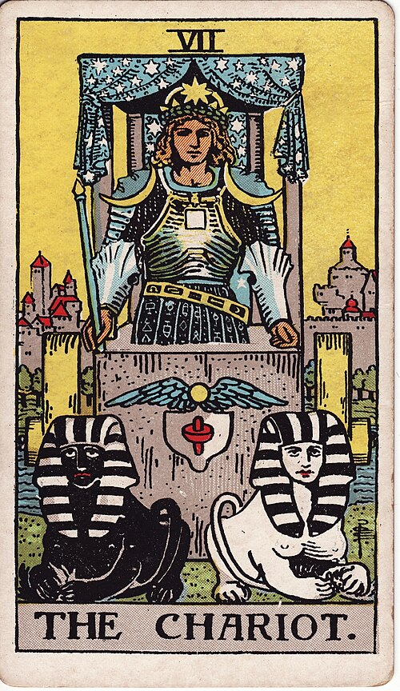

| Arcana | Major · VII |
| Suit | — |
| Element | Water |
| Attribution | Cancer |
The Chariot
In shortYou can win this if you hold your nerve.
Upright
This is progress made by holding a course under pressure. The Chariot does not win by getting rid of the conflict — it wins by harnessing two things pulling in opposite directions and going somewhere anyway. It rewards concentration and nerve, and it generally means this can be won if you refuse to be pulled off course.
Reversed
You have lost the reins. That looks like effort scattering, momentum draining away into competing demands, or pushing so hard that you are creating the resistance you then have to fight. It can also mean travelling fast in a direction you never actually chose, or winning something that stopped mattering to you a while ago.
The turn
Hold the line for a defined stretch. Decide the distance now so you are not renegotiating at every mile.
Reading with your own deck?
Sage records the cards you actually pull, writes the reading, keeps every one, and shows you what keeps returning across them. Free, private, no account.